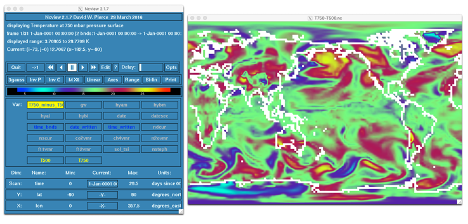

Adding New History Fields
Contents
Adding New History Fields#
A common source code modification that you may want to do is to output a new variable.
As an example, CAM has a history field that corresponds to the temperature at 500hPa and a number of other pressure levels, but not at 750hPa. Suppose you wanted to output the temperature at 750hPa. The following two calls are required to add an output variable:
call addfld(’T750’,...) (Add a field to the master field list)
call outfld(’T750’,...) (Collect values for this field and write to history file)
Each of these are now described in more detail:
addfld#
The sub-routine addfld adds a field to the master list with the following syntax:
addfld(fname,type,avgflag,units,long name)
where
fname=field nametype=the type of field. The entry for a single level field would be “horiz only” and the entry for a 3D field would be “(/ ’lev’ /)”.avgflag=Averaging flag, A = average, I=instantaneousunits=the units of the fieldlong name=Field full name
Appropriate values of these parameters for the output of T750 are:
call addfld(’T750’,horiz only, ’A’, ’K’, ’Temperature at 750hPa pressure
surface’)
with
fname= Field namefield= array containing field valuesidim= longitude dimension of field arrayc= chunk (physics) or latitude (dynamics) index.
outfld#
The subroutine outfld accumulates (or takes the minimum or, maximum of etc as appropriate) the field into the history buffer for the appropriate history tape with the following syntax
addfld(fname,type,avgflag,units,long name)
where
fname= Field namefield= array containing field valuesidim= longitude dimension of field arrayc= chunk (physics) or latitude (dynamics) index.
For example:
call outfld(’T750’,t750, pcols, lchnk)
Create a case called “b1850_T750” using the compset B1850 at f19_g17 resolution.
Add an output field for the temperature at 750 mbar.
Output daily values of T750 and T500 in the “h1” history file.
Set the namelist to output a single h1 for the run.
Make a 1-month run.
Click here for hints
Tip to add T750
Use T500 as a template for your changes.
Find the subroutine containing T750. For instance, in the CESMROOT, use the command:
grep –r T500 *
Tip to check your solution T750
When the run is completed, go to your archive directory:
check the fields T750 and T500 are in the file h1
create a file with the difference between T750-T500
For instance, you can use
ncap2
ncap2 -s ’T750_minus_T500=T750-T500' b1850_T750.cam.h1.0001-01-01-00000.nc T750-T500.nc
Look at the difference with
ncview.
Click here for the solution
#Create a new case b1850_T750 with the command:
./create_newcase --case ~/cases/b1850_T750 --compset B1850 --res f19_g17
#Case setup:
cd ~/cases/b1850_T750
./case.setup
#Locate the file where T500 is computed and copy it into SourceMods/src.atm:
cp /glade/p/cesm/tutorial/cesm2.1_tutorial2022/components/cam/src/physics/cam/cam_diagnostics.F90 SourceMods/src.cam<br>
#Edit the file SourceMods/src.cam/cam_diagnostics.F90 and add the lines:
!++ add a variable for T750
call addfld ('T750', horiz_only, 'A', 'K','Temperature at 750 mbar pressure surface')
!++ add a variable for T750
if (hist_fld_active('T750')) then
call vertinterp(ncol, pcols, pver, state%pmid, 75000._r8, state%t, p_surf, &
extrapolate='T', ps=state%ps, phis=state%phis)
call outfld('T750 ', p_surf, pcols, lchnk )
end if
#Edit the file user_nl_cam and add the lines:
nhtfrq = 0, -24<br>
mfilt = 1, 31<br>
fincl2 = 'T750', 'T500'<br><br>
#Change the run length :
./xmlchange STOP_N=1,STOP_OPTION=nmonths<br><br>
#Change job queue and account number (if needed). For instance:
./xmlchange JOB_QUEUE=regular,PROJECT=UESM0011<br><br>
#Build and submit:
qcmd -- ./case.build<br>
./case.submit<br>
#When the run is completed, check the fields T750 and T500 are in the file h1:
cd /glade/scratch/$user/archive/b1850_T750/atm/hist/ <br>
ncdump -h b1850_T750.cam.h1.0001-01-01-00000.nc<br><br>
The file should contain:
float T500(time, lat, lon) ; <br>
T500:units = "K" ;<br>
T500:long_name = "Temperature at 500 mbar pressure surface" ;<br>
T500:cell_methods = "time: mean" ;<br>
float T750(time, lat, lon) ;<br>
T750:units = "K" ;<br>
T750:long_name = "Temperature at 750 mbar pressure surface" ;<br>
T750:cell_methods = "time: mean" ;<br>
#Create a file with the difference between T750-T500 :
cd /glade/scratch/$user/archive/b1850_T750/atm/hist/ <br>
ncap2 -s ‘T750_minus_T500=T750-T500' b1850_T750.cam.h1.0001-01-01-00000.nc T750-T500.nc <br>
#Look at the difference between T750-T500 with ncview:
cd /glade/scratch/$user/archive/b1850_T750/atm/hist/
ncview T750-T500.nc
The field T750-T500 looks like:

Figure: Overview of the CESM directories and the SourceMods directories.